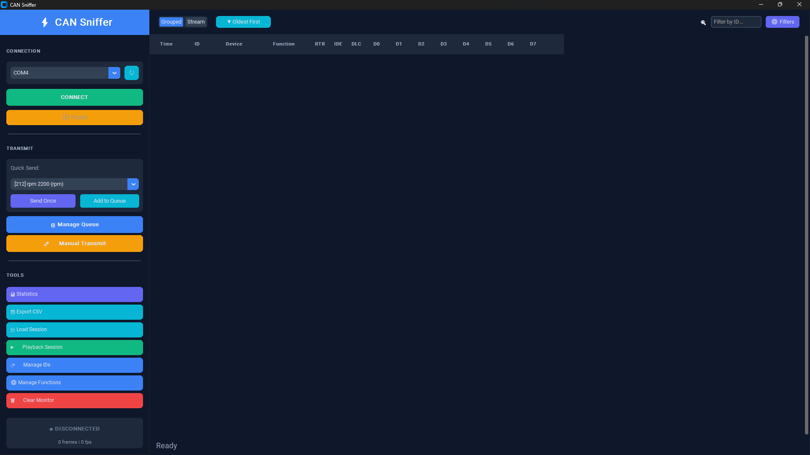
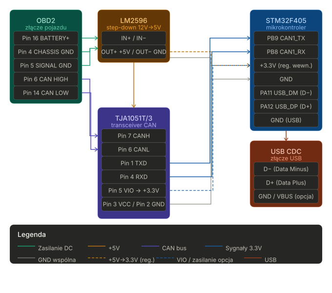

firmware/Core/Src/can_handler.c — konfiguracja filtrów CAN, ISR RX, dekoder ramek, (szablon) funkcja nadawcza trybu jazdy.firmware/Core/Inc/can_handler.h — definicje struktur danych: CAN_RawFrame, TelemetryFrame, enum DriveCmd i deklaracje kolejek.firmware/Core/Src/usb_handler.c — serializacja TelemetryFrame do JSON i funkcja parsująca komendy przychodzące przez CDC.firmware/Core/Inc/usb_handler.h — prototypy usb_send_telemetry() i usb_parse_cmd().firmware/Core/Src/freertos.c — tworzenie kolejek FreeRTOS oraz implementacja zadań: Task_CAN_Decode, Task_USB_TX, Task_Drive_TX.firmware/Core/Src/main.c — inicjalizacja peryferiów (CAN1/CAN2, GPIO, USB), start RTOS i defaultTask (uruchamia USB device).firmware/obd-telemetry.ioc — konfiguracja CubeMX (można otworzyć w STM32CubeIDE aby wygenerować/zmodyfikować projekt).firmware/EWARM/ — projekt Keil MDK-ARM (pliki projektu do budowy dla Keil).HAL_CAN_RxFifo0MsgPendingCallback) odczytuje ramkę i wrzuca CAN_RawFrame do kolejki q_raw_frames.Task_CAN_Decode pobiera surowe ramki, wywołuje dekoder (can_decode_and_update) i publikuje aktualny TelemetryFrame do q_telemetry (zastępując poprzedni wpis).Task_USB_TX odczytuje q_telemetry i co ~20 ms wysyła JSON przez USB CDC (usb_send_telemetry).Task_Drive_TX czeka na komendy w q_tx_cmd i przekazuje je do funkcji nadawczej CAN (can_send_drive_mode) — obecnie jest to szablon/zakomentowane (wymaga uzupełnienia ID i payload).CAN_RawFrame (w can_handler.h): { id, dlc, data[8], timestamp } — surowa ramka odbierana z ISR.TelemetryFrame: zawiera pola: rpm, speed (km/h*10), temp_engine, temp_oil, boost_kpa, throttle, tv_rear_left/right, drive_mode, wheel_spd[4], timestamp.freertos.c): q_raw_frames (32 elementy), q_telemetry (8 elementów), q_tx_cmd (4 elementy).can_filter_init_all() ustawia CAN1 w trybie "sniff" (przepuszcza wszystkie ramki), CAN2 jako slave (banki filtrów zależne od układu F405).HAL_CAN_RxFifo0MsgPendingCallback: pobiera nagłówek i bajty ramki, buduje CAN_RawFrame i wrzuca do q_raw_frames (wersja FromISR).decode_frame() rozpoznaje kilka stałych ID i ekstraktuje wartości:
CAN_ID_WHEEL_SPEED (0x190): bajty 0-1 FL, 2-3 FR, 4-5 RL, 6-7 RR; zapisane jako 16-bit, speed = średnia czterech kół.CAN_ID_THROTTLE (0x213): throttle = data[0] * 100/255.CAN_ID_TEMP (0x420): temp_engine = data[0] - 40.0x7E8: obsługa service 0x41 (response dla service 01) — parsuje PIDy: 0x0C (RPM), 0x0D (vehicle speed), 0x0B (boost/MAP), 0x5C (oil temp).usb_send_telemetry() serializuje TelemetryFrame do pojedynczego JSON-owego obiektu zakończonego CRLF. Przykład pól:
ts (timestamp), rpm, spd (km/h), boost, tps, t_eng, t_oil, tv_rl, tv_rr, spd_fl, spd_fr, spd_rl, spd_rr, mode.usb_parse_cmd() parsuje komendy tekstowe w formacie CMD:NAME, obsługiwane predefiniowane: CMD:NORMAL, CMD:SPORT, CMD:TRACK, CMD:DRIFT, CMD:SNOW. Zwraca enum DriveCmd lub CMD_NONE.Do wizualizacji i przejrzystej analizy odbieranych ramek CAN z magistrali, wykorzystaliśmy dedykowaną aplikację komputerową, którą stworzyłem w ramach mojej pracy inżynierskiej. Program ten w znacznym stopniu usprawnił pracę nad projektem, pozwalając na intuicyjne monitorowanie transmitowanych danych w czasie rzeczywistym i wychwytywanie wzorców dla konkretnych ID.

Przetwornica obniża napięcie z instalacji samochodowej (zazwyczaj 12V–14.4V) do stabilnego napięcia 5V, które zasila transceiver CAN oraz stabilizator 3.3V mikrokontrolera.
Wejście zasilania (IN):
OBD2 Pin 16 (BATTERY +) -> LM2596 IN+
OBD2 Pin 4 (CHASSIS GND) -> LM2596 IN-
OBD2 Pin 5 (SIGNAL GND) -> LM2596 IN-
Wyjście zasilania (OUT):
LM2596 OUT+ (+5V) -> TJA1051 VCC (Pin 3) oraz wejście stabilizatora 3.3V dla STM32
LM2596 OUT- (GND) -> Wspólna masa układu (GND)
Wersja /3 tego układu posiada dedykowany pin VIO, który służy do dopasowania poziomów logicznych do standardu 3.3V. Pozwala to na bezpieczną, bezpośrednią współpracę z procesorami STM32 bez użycia dodatkowych konwerterów napięć.
Strona magistrali (Samochód):
TJA1051 Pin 7 (CANH) -> OBD2 Pin 6 (CAN HIGH)
TJA1051 Pin 6 (CANL) -> OBD2 Pin 14 (CAN LOW)
Strona logiczna (Mikrokontroler STM32F405):
TJA1051 Pin 1 (TXD) -> STM32 PB9 (CAN1_TX)
TJA1051 Pin 4 (RXD) -> STM32 PB8 (CAN1_RX)
TJA1051 Pin 5 (VIO) -> STM32 +3.3V
TJA1051 Pin 3 (VCC) -> LM2596 OUT+ (+5V)
TJA1051 Pin 2 (GND) -> Wspólna masa (GND)
Urządzenie wykorzystuje wbudowane peryferium USB_OTG_FS w trybie Device do komunikacji z komputerem.
STM32 PA11 (USB_DM) -> Złącze USB Data- (D-)STM32 PA12 (USB_DP) -> Złącze USB Data+ (D+)Wspólna masa (GND) -> Złącze USB GNDZłącze USB VBUS (+5V) można podpiąć przez diodę zabezpieczającą do sekcji zasilania, aby umożliwić diagnostykę i działanie układu "na biurku" po podpięciu do komputera, bez konieczności zasilania z portu OBD2.